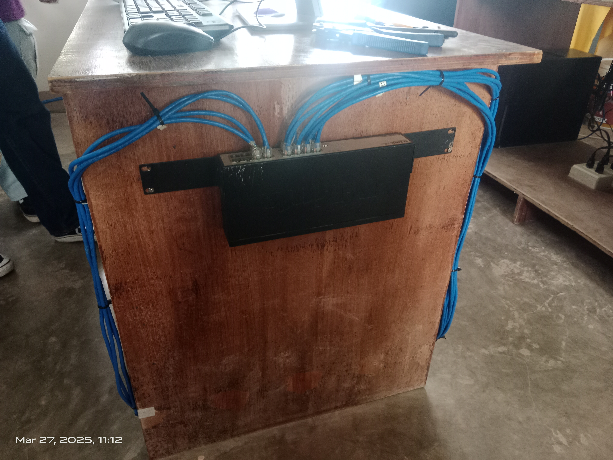
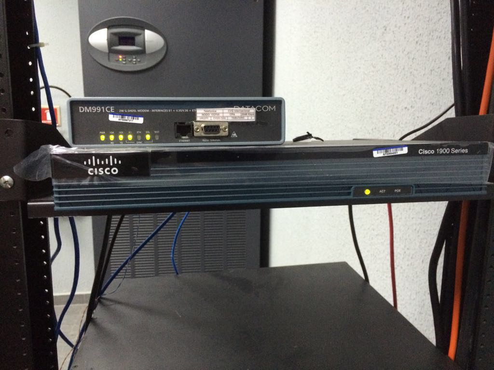

Comprender qué es segmentar una red y por qué es importante.
Identificar distintas formas de segmentación: física, lógica y por subredes.
Reconocer los beneficios y limitaciones de cada tipo.
Aplicar la segmentación para optimizar el rendimiento y la seguridad.
1
¿Qué es segmentar una red?
Dividir para controlar mejor la comunicación.
Definición: la segmentación de redes consiste en dividir una red en partes más pequeñas para controlar el tráfico, mejorar el rendimiento y aumentar la seguridad.
Según el método utilizado, en cada segmento se puede:
Reducir el alcance de los dominios de broadcast.
Controlar mejor quién se comunica con quién.
Aplicar políticas y configuraciones diferentes.
Precisión: dividir puertos en un switch no reduce por sí solo el dominio de broadcast. Para conseguirlo se requieren VLANs, subredes y un límite de capa 3.
2
¿Por qué segmentar?
Beneficios operativos y de seguridad.
Menos congestión: el tráfico local se limita al segmento correspondiente.
Más seguridad: permite aislar grupos y controlar el tráfico entre ellos.
Gestión más simple: cada segmento puede administrarse y monitorearse de forma independiente.
Mejor rendimiento: disminuye el tráfico innecesario que recibe cada equipo.
Ejemplo: si Administración y Ventas comparten un único dominio de broadcast, ambos reciben las difusiones. Al separarlos en VLANs y subredes, cada grupo conserva su propio dominio y el tráfico entre ambos puede controlarse.
3
Formas de segmentación
Tres enfoques que pueden combinarse.
3.1. Física
Separa equipos mediante infraestructura, enlaces o interfaces diferentes. Para separar dominios IP y de broadcast se emplea un router o switch multicapa.
Separación visible.
Puede requerir más hardware y cableado.
Útil entre edificios, pisos u oficinas.
3.2. Lógica: VLAN
Un switch administrable agrupa puertos en redes virtuales independientes, aunque compartan el mismo equipo físico.
Flexible respecto de la ubicación.
Aísla el tráfico de capa 2.
Requiere capa 3 para comunicar VLANs.
3.3. Subredes
Divide el espacio de direcciones IP en rangos más pequeños, cada uno con su dirección de red y broadcast.
Asigna un rango por sector.
Exige calcular prefijo y máscara.
Necesita enrutamiento entre subredes.
Método
Dónde se aplica
Ventaja
Limitación
Física
Infraestructura y enlaces
Separación directa
Más hardware
VLAN
Switch administrable
Flexibilidad
Requiere configuración
Subred
Direccionamiento IP
Uso ordenado de direcciones
Requiere cálculo y router
4
De una red plana a una red segmentada
El mismo switch puede alojar varios dominios lógicos.

El switch administrable permite crear VLANs y asignar puertos a cada grupo.

El router permite comunicar subredes y aplicar decisiones de capa 3.
5
Actividades en Consola de Windows
Analizar la configuración IP y comprobar el efecto de distintas subredes.
Laboratorio autorizado: no cambies la configuración IP de un equipo de uso diario. Realizá los cambios en Packet Tracer, máquinas virtuales o PCs de laboratorio y registrá la configuración original antes de comenzar.
Abrí CMD, ejecutá el comando y anotá la dirección IPv4 y la máscara.
ipconfig
Calculá la dirección de red, la dirección de broadcast y la cantidad de hosts utilizables. Luego analizá qué cambiaría con un prefijo /26 o /28.
Ubicá PC1 en 192.168.10.0/24 y PC2 en 192.168.20.0/24, usando direcciones válidas de host.
Intentá hacer ping entre ellas.
Determiná por qué no se comunican directamente y qué dispositivo necesitan.
Reemplazá el marcador por el broadcast calculado para tu red:
ping [dirección_broadcast_de_tu_red]
Observá el resultado, repetí la prueba en otra subred y explicá si los broadcasts atraviesan el router. Los equipos o firewalls pueden no responder a esta prueba.
Diseñá una red de doce PCs para tres departamentos, con cuatro PCs por departamento. Indicá si usarías VLANs, subredes, separación física o una combinación y justificá la elección.
6
Actividades en Cisco Packet Tracer
Practicar segmentación física, lógica y por subredes.
Actividad 5. Segmentación física con router
Colocá un router, dos switches y cuatro PCs, dos por switch.
Conectá cada switch a una interfaz diferente del router.
Usá 192.168.10.10 y .11/24 con gateway 192.168.10.1 en el primer grupo; 192.168.20.10 y .11/24 con gateway 192.168.20.1 en el segundo.
Verificá los nombres reales de las interfaces del modelo elegido con show ip interface brief y adaptá la configuración si no usa FastEthernet.
enable
configure terminal
interface fa0/0
ip address 192.168.10.1 255.255.255.0
no shutdown
exit
interface fa0/1
ip address 192.168.20.1 255.255.255.0
no shutdown
end
show ip interface brief
Probá primero dentro de cada red y luego entre ambas.
Actividad 6. Segmentación lógica con VLANs
Conectá cuatro PCs a un switch administrable y configurá dos puertos para Administración y dos para Ventas.
enable
configure terminal
vlan 10
name Administracion
exit
vlan 20
name Ventas
exit
interface range fa0/1-2
switchport mode access
switchport access vlan 10
exit
interface range fa0/3-4
switchport mode access
switchport access vlan 20
end
show vlan brief
Asigná direcciones 192.168.10.x/24 a VLAN 10 y 192.168.20.x/24 a VLAN 20. Las PCs de la misma VLAN deben comunicarse; entre VLANs se necesita enrutamiento.
Actividad 7. Segmentación por subredes
Conectá cuatro PCs a un switch.
Asigná 192.168.1.10 y 192.168.1.20/25 a la subred A.
Asigná 192.168.1.130 y 192.168.1.140/25 a la subred B.
Comprobá la conectividad dentro de cada subred y el aislamiento entre ellas.
Añadí un router con una interfaz lógica o física en cada subred, configurá gateways y repetí la prueba.
Actividad 8. Reto de integración
Diseñá tres VLANs: Administración, VLAN 10 y red 192.168.10.0/24; Ventas, VLAN 20 y red 192.168.20.0/24; Soporte Técnico, VLAN 30 y red 192.168.30.0/24.
Usá router-on-a-stick: configurá el enlace switch-router como trunk, una subinterfaz dot1Q por VLAN y la dirección gateway correspondiente. Comprobá conectividad directa dentro de cada VLAN y enrutada entre VLANs.
7
Videos para acompañar la práctica
Demostraciones externas seleccionadas para repasar los procedimientos.
Creación de subredes en Packet Tracer
Ejemplo en español para calcular redes, máscaras y rangos y llevarlos al simulador.